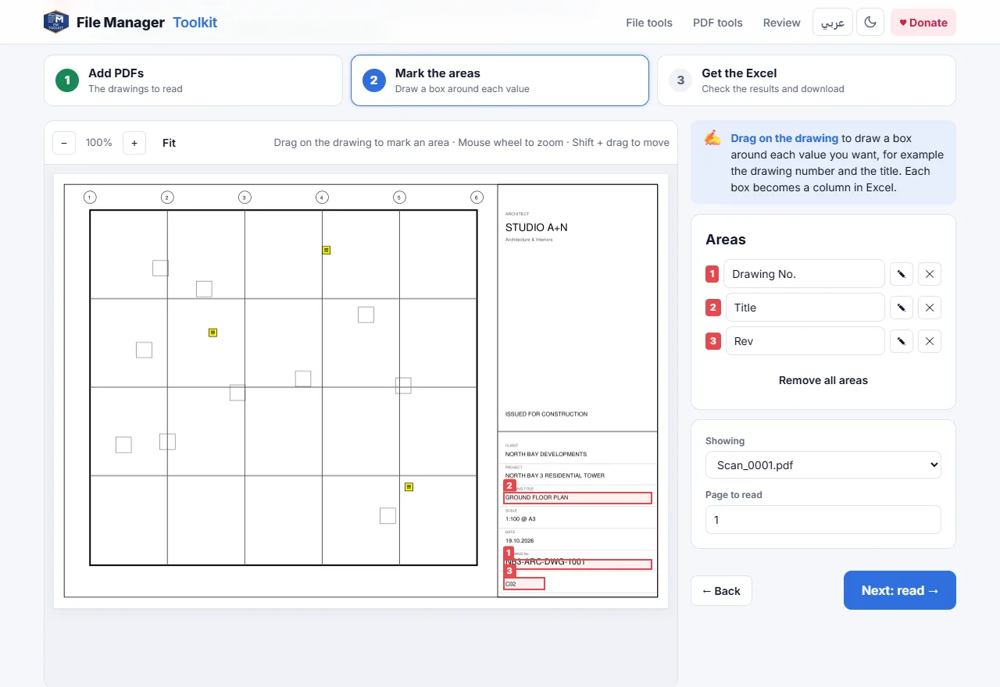
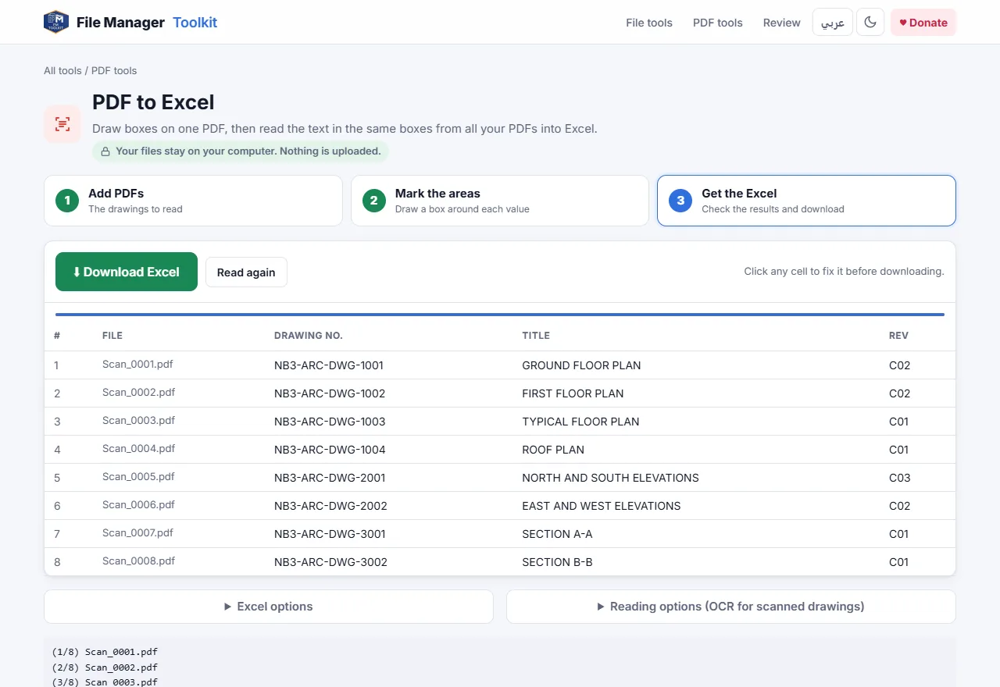

How to make a drawing register in Excel from PDF drawings
Read the drawing number, title and revision from the title block of every PDF in a set, and get them as rows in an Excel sheet, without typing a single line.
Your files stay on your computer. Nothing is uploaded.
Short answer
Open PDF to Excel, add your PDF drawings, drag one box around the drawing number, one around the title and one around the revision, then click Download Excel. Each PDF becomes one row and each box becomes one column.
Why normal PDF to Excel converters do not help here
Most PDF to Excel converters try to turn a whole page into a spreadsheet. That works for an invoice with a table, but a drawing is not a table: you get hundreds of cells of dimensions, notes and grid labels, and the drawing number is lost somewhere in the middle.
For a drawing register you only need the same few values from every sheet: the number, the title, the revision and maybe the scale or date. Those values always sit in the same place in the title block, so the right approach is to read just those areas, on every file, and put each one in its own column.
Step by step
Add the PDF drawings
Open the tool and click Choose PDF files, or Choose a folder to add every PDF in a folder. You can add a whole issue set of hundreds of sheets.
Draw a box around each value
The first drawing opens on screen. Drag a box around the drawing number, then around the title, then around the revision. Name each box, for example Drawing No., Title and Rev. The names become the column headers.
Read all the drawings
Click Next: read. The tool reads the same boxes on every PDF and fills a table, one row per file. Real PDF text is read exactly; scanned areas are read with OCR.
Check and fix the table
Look down the columns. Click any cell to correct it before downloading, for example where a scan was too faint to read.
Download the Excel file
Click Download Excel. To update a register you already have, open Excel options, choose Add to an existing Excel and set the sheet name and start cell.


Tips for a clean register
- Draw each box a little larger than the text, so longer titles on other sheets still fit inside.
- Keep Include file name ticked, so you can always trace a row back to its PDF.
- Tick Compare area 1 with the file name to spot PDFs whose file name does not match the drawing number.
- If one set uses two title block layouts, for example A1 and A3, read each group separately and add both to the same workbook.
Scanned drawings and Arabic text
When an area has no real text, because the drawing was scanned or the text was exploded, the tool uses OCR. Open Reading options to choose English, Arabic or both. Arabic project names and titles are read right to left and written to Excel as normal Arabic text you can sort and filter.
Where to go from here
Once the register is in Excel, the Pre-flight Check can compare it with the PDFs before an issue: it finds duplicated drawing numbers, missing sheets and revisions that do not match the list. If the file names are wrong too, Rename from Title Block fixes them from the same title block.
Build your drawing register now
Free, runs in your browser, and your drawings never leave your computer.
Open PDF to Excel →Questions
Can I convert PDF to Excel for free?
Yes. PDF to Excel is free with no daily limit. It is made for reading the same fields from many drawings, rather than converting one page into a sheet.
Does it read scanned PDFs?
Yes. Areas without real text are read with OCR in English, Arabic or both. A clear scan at 300 DPI or more gives the best results.
Are my PDF drawings uploaded?
No. The files are opened by your browser on your own computer and nothing is sent to a server.
Can I add the results to my existing drawing register?
Yes. Choose Add to an existing Excel, pick the workbook, and set the sheet and start cell. Insert mode writes into the sheet without clearing it.
How many drawings can I read at once?
Hundreds. Real PDF text is read in a moment; OCR takes a few seconds per drawing, depending on your computer.